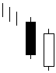

تحلیل تکنیکال
الگوهای کندل استیک ها
الگوهای برگشتی صعودی
Bullish Piercing Line

در این الگو (پوشش شکاف صعودی) شاهد دو شمع با رنگ های متفاوت هستیم. در شمع اول بدنه مشکی (نزولی) و شمع
دوم بدنه ای سفید (صعودی) با نقطه پایانی پایین تر از نقطه آغازین شمع قبلی می بینیم و نقطه آغاز شمع دوم با شکافی
نزولی نسبت به پایان شمع اول شروع شده است. این الگو در انتهای روند نزولی تشکیل شده و نمایشگر آغاز روند صعودی می
باشد.